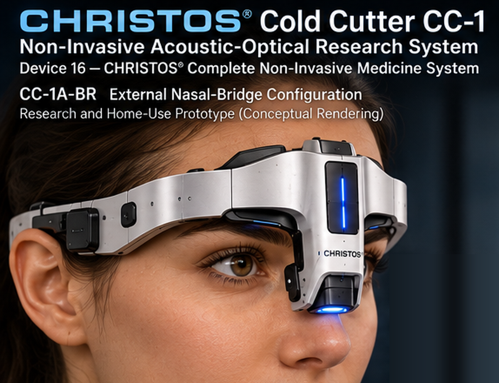

Scientific Status
This appendix is a proposed research and engineering program: a formally derived hypothesis with a design architecture and a falsifiable experimental plan, not yet confirmed. CC-1 has not been built, bench-characterized or tested in humans. No therapeutic effect, safety margin or regulatory status is established. The Christos coherence-modulation layer is a hypothesis to be tested against matched controls, and no benefit from it is claimed.
Clinical Disclaimer
The Cold Cutter™ CC-1 is a research concept. It is not FDA approved, cleared or authorized, it is not available for sale or clinical use, and nothing in this appendix is medical advice, diagnosis or treatment. Nose, sinus and facial conditions should be evaluated by a licensed physician. Consult a physician before using any device or procedure on the nose, sinuses or face. No device described here should be built for, or used on, a person.
This appendix to the CHRISTOS® Complete Non-Invasive Medicine System (BM-14) develops Device 16, the Cold Cutter™ CC-1, from a single entry in the parent paper into a full engineering and research architecture. CC-1 is a proposed non-ablative upper-airway research platform that combines low-intensity pulsed ultrasound (LIPUS), photobiomodulation (PBM) and an optional, independently switchable Christos coherence-modulation layer, supervised by an independent hardware safety path and an advisory-only data layer.
The appendix reviews the sinonasal literature, anatomical constraints, standards and regulatory framework, and then states the requirements that any valid implementation must meet before components are selected. It describes the acoustic, optical, coupling, thermal, electrical and safety subsystems, the verification, fault-injection and phantom-validation programs, the geometry and anatomical-boundary framework, and a falsifiable experimental design that separates established physics, modality hypotheses and Christos-specific hypotheses.
CC-1 is at the design stage. Exact dimensions, power draws, frequency and duration parameters, component selections and software implementations are not disclosed in this public version.
A.1 Purpose, Scope and Naming
The CHRISTOS® Cold Cutter™ CC-1 is a proposed upper-airway recovery platform. It combines low-intensity pulsed ultrasound (LIPUS), photobiomodulation (PBM) and an optional, independently switchable Christos coherence-modulation layer. A rule-based advisory layer, the Field Ledger with its Coherence Triager, selects and records protocols and compares pre-session and post-session measurements. The advisory layer recommends; a human operator initiates; and the device enforces its own safety envelope locally. CC-1 is Device 16 of the CHRISTOS® Complete Non-Invasive Medicine System (BM-14), and this appendix is its engineering appendix.
The name does not describe the mechanism. The device is non-ablative. It is not intended to cut, ablate, coagulate or remove tissue, and a design whose effect depends on thermal injury would violate the purpose of the architecture.
This appendix has three functions. It records the research basis for the design. It states the requirements that any valid implementation must satisfy, so that every component eventually selected has a documented reason for being there. It then describes the engineering architecture, verification program and research plan that follow from those requirements, with implementation-level parameters withheld.
A.2 Clinical and Scientific Context
A.2.1 Therapeutic ultrasound in the sinonasal system
A direct sinonasal literature exists. A 2021 systematic review identified nine therapeutic-ultrasound studies with 309 participants who had chronic rhinosinusitis (CRS), including randomized and double-blind trials [1]. The review judged the studies to be generally small, heterogeneous and frequently at high risk of bias. The published protocols apply ultrasound externally over the maxillary and frontal sinus regions, most often at 1 MHz. One randomized double-blind study compared continuous with 1:9 pulsed exposure at 1 W/cm² over the maxillary sinus and 0.5 W/cm² over the frontal sinus. A placebo-controlled study of continuous 1 MHz exposure reported short-term improvement in nasal obstruction while calling for further work on mechanisms and adverse effects. An earlier uncontrolled series of pulsed therapeutic ultrasound in 22 refractory CRS patients reported improvement in 18 of the 20 who completed treatment; a small uncontrolled result of that kind cannot establish efficacy by itself.
A.2.2 Photobiomodulation in the sinonasal system
Direct human sinonasal PBM research also exists. A sham-controlled CRS trial using 830 nm light (applied externally over sinus locations) reported significantly greater symptom improvement with active treatment than with sham [3]. A 2024 randomized sham-controlled study at 904 nm and 2.5 J reported improvement in several CRS outcomes [4]. An older randomized study applied 660 nm illumination directly to nasal mucosa in allergic rhinitis and reported symptom and endoscopic improvement, without benefit in nasal polyposis. Other rhinophototherapy work has been mixed; one study found no objective improvement in nasal patency. A 2025 systematic review and meta-analysis of six studies and 162 patients found improvement in subjective CRS symptoms, while objective CT measures did not reach statistical significance and heterogeneity was substantial [2]. The authors characterize the evidence as preliminary.
A.2.3 What the evidence supports
The literature is sufficient to justify investigating both modalities in the upper airway. It is not sufficient to establish a clinical protocol, and it does not justify copying the exposure parameters of external sinus studies into an intranasal device. Studies of other devices and exposure protocols do not establish CC-1 safety or effectiveness. The literature may be cited as the rationale for an experiment; it may not be represented as proof of the invention.
A.2.4 The Christos modulation layer
No external medical literature supports a Christos-specific advantage from adding an amplitude-modulation envelope at the Christos modulation frequency to therapeutic ultrasound. That frequency appears in the CHRISTOS® architecture independently of the Cold Cutter, including in the Organ Communication Network and Sound as Medicine papers, which establishes provenance and motivates a test. It does not establish a biological effect. Three statements are therefore kept separate throughout this appendix:
- The Christos modulation frequency is documented Christos architecture.
- Amplitude modulation at that frequency in CC-1 is a plausible design element from earlier drafts whose original provenance is incomplete.
- A specific biological advantage from that modulation is a formally derived hypothesis, not yet confirmed.
A.3 Anatomical Constraints on the Applicator
The relevant tissue is nasal mucosa, and it is not uniformly thin or uniform in any other respect. The vestibule, respiratory region, turbinates, septum and olfactory region differ substantially in tissue and vascular characteristics. The middle and inferior conchae contain dense vascular and erectile tissue, while the superior region approaches the olfactory mucosa and the cribriform plate. The cribriform plate forms part of the nasal roof, olfactory nerves traverse it, and the orbit and paranasal sinuses are close neighbors. The superior and posterior anatomy therefore requires protection by design.
Two consequences follow. First, the focal-length, treatment-depth and generic intranasal-placement values in earlier drafts are not inherited. They are provisional and unverified. Second, architecture and engineering principles from other Christos devices may be borrowed, but their energy levels, penetration depths, focusing geometry and exposure parameters may not. Acoustic Dissolution Surgery, Auditory Regeneration and Resonant Dentistry operate in different anatomical and energetic regimes, and any reusable acoustic architecture must be separated from material that belongs only to a high-energy or ablative operating regime.
CC-1 anatomical safety constraint. Since the intended treatment site involves delicate, thin, vascular upper-airway tissue and nearby sensitive anatomy, applicator geometry and energy-delivery parameters are not inherited wholesale from other Christos devices. They require CC-1-specific anatomical, dosimetric, thermal, mechanical and acoustic verification before being treated as final engineering specifications.
Thin tissue does not by itself indicate the correct energy setting. It gives a reason to characterize exposure carefully. The operating envelope is derived later from anatomy, acoustic and optical modeling, bench measurement and applicable safety standards, not by guessing a lower number.
The earlier design draft did not sufficiently develop one subsystem, which this appendix adds: Anatomical Access and Depth-Limiting Architecture. It addresses physical insertion limits, atraumatic tip geometry, coupling-interface compliance, prevention of excessive localized pressure, acoustic and optical exposure, thermal monitoring, loss-of-contact behavior, cleaning and sterility or disposable-tip requirements, and mechanical keying that distinguishes nasal from pharyngeal applicators.
A.4 Standards and Regulatory Framework
A professional engineering path exists for each part of the device. The standards below are used as sources of requirements. They are not claimed as compliance until a final architecture has been tested against them.
| Standard or guidance | Relevance to CC-1 |
|---|---|
| IEC 61689 | Physiotherapy ultrasound from 0.5 to 5 MHz. Its defined scope is a plane, non-focusing circular transducer producing a static beam perpendicular to the treatment head, and it establishes methods for characterizing acoustic output and field safety. |
| IEC 60601-2-5 | Safety and essential performance of ultrasonic physiotherapy equipment. Its scope does not cover focused pulsed ultrasound equipment, and the FDA recognition record notes limits to its scope. |
| IEC 60601-2-62 | High-intensity therapeutic ultrasound (HITU), a substantially different safety regime from low-intensity non-focused ultrasound. |
| IEC 62127-1 | Hydrophone measurement and characterization of medical ultrasonic fields. |
| IEC 60601-1 | General medical electrical equipment safety, including single-fault safety through the expected service life. |
| ISO 10993 series | Biological evaluation. Mucosal-membrane contact is listed separately, with endpoints including cytotoxicity, sensitization and irritation, and further endpoints that depend on contact duration. |
| ISO 14971 and IEC 62304 | Risk management and software lifecycle engineering for the firmware and for the interface with the Field Ledger. |
| FDA ultrasonic diathermy guidance | One regulatory reference for premarket expectations for physiotherapy ultrasound equipment, used in place of an assumed pathway. |
Whether CC-1 is focused or non-focused is therefore not only a mechanical or optical decision. It can change which standards and which regulatory framework apply. For that reason the device is not described as compliant with IEC 60601-2-5; the relevant requirements are used, and the applicable set of standards is determined once the final acoustic architecture is defined.
A.5 Requirements-First Method and Evidence Classification
The design question is not which components the earlier Cold Cutter draft contained. It is which requirements any valid Cold Cutter implementation must satisfy. Once the requirements are fixed, the earlier components, circuit boards and firmware are evaluated against them; some survive, some change, and some are discarded. The requirement tree runs from the target to the test:
target anatomy → required field → delivery route → transducer and optics → coupling → dosimetry → sensing → thermal model → mechanical constraints → failure modes → controller → verification test.
A.5.1 Objective and target
- Research objective: upper-airway recovery research, with the sinonasal mucosa and turbinate region as the primary local target.
- Functional outcomes are measured separately from mechanism.
- No assumption of regeneration, disease reversal or surgical equivalence is made.
- The nasal cavity is not treated as one homogeneous target; superior and posterior anatomy is mechanically protected, and insertion and orientation are constrained.
A.5.2 Statement classes
Every statement in the engineering record belongs to one of four classes: established evidence, inherited Christos architecture, provisional engineering design, or experimental hypothesis. Inherited architecture establishes provenance and motivates a test. It does not establish performance in CC-1.
A.5.3 Feature admission rule
No architectural feature is included in CC-1 solely because it appears elsewhere in the Christos framework. Each feature must either satisfy an established engineering requirement or survive an application-specific experimental comparison. Evidence obtained in another Christos architecture establishes provenance and motivates a test; it does not establish performance in CC-1. Every node, wavelength, sensor, frequency, geometric relationship and modulation must earn its place. If four emitters provide the required localization, adding twelve because twelve appears elsewhere in the framework would be poor engineering.
A.5.4 Earlier design candidates
Earlier design drafts named specific components and operating values. None of them is discarded and none is locked. Each is treated as a candidate that requires verification and is held in the provisional register (Section A.24). The values and component selections themselves are not disclosed in this public version.
A.6 Platform and Applicator Configurations
CC-1 is not one all-purpose wand. It is a controlled upper-airway treatment platform with interchangeable treatment heads and independently isolable subsystems, which makes the device more falsifiable than a black box in which several things happen at once.
| Element | Role |
|---|---|
| External acoustic head | Controlled therapeutic ultrasound through conventional coupling over the cheek and forehead sinus regions. |
| Intranasal photonic head | Geometrically constrained, shallow applicator delivering controlled PBM to appropriate mucosal regions. |
| Combined head | Considered only after bench characterization shows that joint acoustic and optical delivery provides a real advantage. |
| Device controller | Enforces the treatment envelope and safety locally. |
| Field Ledger | Selects and records a predetermined protocol and evaluates pre-session and post-session response. |
| Coherence Triager | Rule-based and advisory. It recommends; a human initiates. |
| Christos modulation | Optional experimental layer that can be enabled or disabled independently. |
A.6.1 Experimental configurations
- CC-1A: external acoustic applicator with a shallow intranasal optical applicator. This is the first configuration evaluated, because the published sinus ultrasound work overwhelmingly supports external transcutaneous delivery, which can simplify coupling, cleaning, biocompatibility, insertion control and mucosal safety.
- CC-1A-BR: the external nasal-bridge optical subvariant of CC-1A. Earlier drafts designated this arrangement CC-1C; that designation is superseded.
- CC-1B: a combined shallow intranasal acoustic-photonic applicator. It could provide more localized delivery but is a harder engineering problem. If bench testing shows that placing ultrasound inside the nose does not justify the added complexity, CC-1B is eliminated. That is falsifiability applied to engineering.
- CC-1C: a professional combined treatment head with more sophisticated positioning and monitoring, relevant to carefully controlled posterior targets.

These are experimental configurations and not three commercial products. A home-use architecture would use a mechanically constrained shallow applicator over a deliberately conservative anterior volume, physically unable to reach the protected region. A clinical architecture could use patient-specific anatomical information and a more capable positioning system. The therapeutic platform is the same; the spatial authority differs.
A.6.2 Passive mechanical constraint
The intranasal applicator is not a straight cylindrical tip that can keep advancing. It carries a physical insertion stop, potentially comprising a main handpiece, a removable treatment head, a broad external nasal stop or flange, a short compliant treatment section, an orientation key and an atraumatic rounded geometry. The geometry itself establishes the treatment zone, software cannot override it, and a user cannot accidentally turn a shallow nasal treatment into a push toward the skull base.
A.7 Acoustic Subsystem Baseline
A.7.1 Baseline architecture
Non-focused therapeutic ultrasound is the provisional baseline, rather than focused ultrasound. IEC 61689 covers non-focusing physiotherapy transducers directly, and focused high-intensity ultrasound moves into a different safety regime. This does not show that non-focused delivery is therapeutically superior; it gives a cleaner first engineering problem.
A.7.2 Three separable acoustic variables
The earlier specification blurred three things that must be separate:
- Acoustic carrier frequency, which determines physical behavior: penetration, attenuation, transducer dimensions and field characteristics.
- Acoustic exposure envelope, meaning intensity, duty cycle, pulse duration, repetition frequency and treatment duration, which determine delivered exposure and thermal and mechanical effects.
- Christos modulation layer, meaning an experimental low-frequency amplitude envelope imposed on the carrier. It is never the carrier itself.
Since the carrier and the envelope are independent variables, the modulation can be switched on and off while the underlying ultrasound exposure is held constant. That is what makes the Christos hypothesis testable.
A.7.3 Baseline requirements
AC-01. CC-1 shall generate a characterized low-intensity acoustic field whose spatial distribution, effective radiating area, acoustic power, intensity, pulse structure and beam nonuniformity can be independently measured before human exposure.
AC-02. Therapeutic acoustic output shall not begin unless acceptable applicator-to-target coupling has been established. How coupling is determined remains open; candidates include acoustic reflection, electrical impedance, force or contact measurement, or another method. The requirement is retained and the sensor technology is not selected.
A.7.4 Characterization before biology
A water-tank and hydrophone characterization phase precedes any biological testing, following the measurement framework of IEC 62127-1. The result is a measured map, not a statement that the transducer outputs a stated intensity. The map covers peak and negative pressure, average acoustic power, spatial-peak values, effective radiating area, beam nonuniformity, near-field structure, distance dependence, pulse envelope and temperature rise. The device then reports what it actually emits rather than what its firmware commands.
A.7.5 Coupling as a designed subsystem
Ultrasound transmission and air gaps do not mix, and silicone is not declared the final coupling medium. Candidate interfaces include a gel interface, a hydrogel membrane, a soft elastomer membrane, a fluid-filled compliant membrane and other biocompatible acoustic windows. They are compared by transmission, reflection, heating, biocompatibility and mechanical compliance, and the selected interface is the one that gives low reflection, repeatable transmission, low heating, appropriate compliance, mucosal compatibility and manufacturability together.
Acoustic Interface Requirement. The patient-contact assembly shall maintain reproducible acoustic coupling to the intended treatment surface while minimizing entrained air, mucosal pressure, friction and localized thermal accumulation. Candidate interface materials shall be selected through acoustic transmission, reflection, heating, biocompatibility and mechanical-compliance testing.
Therapeutic-ultrasound safety literature treats excessive reflected power at the patient interface, unwanted heating, cavitation, mistargeting and exposure outside the target as distinct hazards, not merely as a single temperature limit. Coupling verification replaces the assumption that an applicator is coupled.
A.8 Optical Subsystem Baseline
The optical subsystem is specified in the same way as the acoustic subsystem, by required behavior before components. CC-1 does not yet require any particular source wavelengths. It requires the following:
OP-01. Deliver a characterized optical exposure to the intended mucosal target while maintaining exposure of adjacent structures below predetermined safety limits.
Wavelength is then chosen from the target and not from wavelength popularity. The inputs are target depth, absorption and scattering, irradiance at tissue, fluence, spot geometry, exposure duration and temperature response. If the target is superficial mucosa, red light may be appropriate. If the target includes deeper structures, near-infrared light becomes more interesting. A dual-wavelength architecture remains plausible, but it requires an engineering justification beyond the fact that PBM commonly uses both. The published sinonasal studies used 830 nm and 904 nm externally and 660 nm directly on mucosa, which supplies boundaries and not a single correct wavelength.
An LED driver current is not a biological dose. The complete optical path must be characterized: source, optics, applicator, interface and tissue-facing irradiance distribution. Only then is dose defined in physically meaningful terms, as radiant exposure and not as a nominal irradiance, which remains provisional.
A.9 Patient-Contact Materials and Acoustic Coupling
A.9.1 Coupling as a designed subsystem
The path from source to tissue is a chain: transducer, engineered coupling layer, protective contact interface, tissue. Each boundary changes the transmitted field, so the coupling layer cannot be chosen because it is soft, transparent or sold as medical grade. It must satisfy several independent requirements at once: acoustic transmission across the operating band, optical transparency where light passes through it, biological compatibility for mucosal or skin contact, cleanability or single-use control, mechanical compliance, thermal behavior and durability.
Treating coupling as a subsystem is an idea borrowed from published acoustic-field fabrication work, where a biocompatible coupling medium is part of the field-generation system. The transfer is architectural only. Standing-wave manipulation of particles in a liquid chamber and energy delivery into living nasal tissue are different physical systems, and no equivalence between them is assumed. What transfers is the emphasis on measuring and shaping the spatial field instead of relying on one fixed emitter arrangement.
A.9.2 Acoustic impedance and reflection
At a simplified normal-incidence interface between two media, the pressure reflection coefficient is
where \( Z_1 \) and \( Z_2 \) are the acoustic impedances of the adjacent materials. For ideal lossless media the reflected intensity fraction is \( R^2 \). Softness or appearance says little about acoustic performance: a silicone membrane that looks attractive could transmit poorly at the selected frequency, while a different polymer or a fluid-filled interface could transmit well. Real conditions are more complicated than one flat interface, because layer thickness, frequency, curvature, trapped air and near-field behavior all matter. Both calculation and physical measurement are therefore required.
A.9.3 Materials verification before selection
Before any patient-contact material is selected, candidate materials are characterized as coupons and as layered stacks for acoustic transmission, optical transmission, thermal behavior under combined exposure and mechanical stability. For materials that would touch mucosa or skin, a supplier’s general medical-grade claim is not sufficient. The evaluation requires the biological-risk and reprocessing standards listed in Section A.4.
A.9.4 Reusable controller with a replaceable contact interface
A reusable controller with a replaceable patient-contact interface is the favored architecture for investigation. It isolates the more expensive electronics and calibrated energy sources from the portion exposed to nasal secretions. It also creates a new requirement: the replaceable interface must not alter acoustic or optical delivery unpredictably. Each interface design therefore needs dimensional tolerances, compatibility controls and performance verification. A disposable part that changes the delivered field is not automatically safer because it is disposable.
A.10 Field and Thermal Models
A.10.1 Acoustic field model
For an initial linear approximation, the complex acoustic pressure \( p \) in the frequency domain satisfies the Helmholtz equation
where \( k \) is the wave number, \( \omega \) the angular frequency and \( c \) the speed of sound in the modeled medium. For a locally traveling plane wave the intensity is approximated by
where \( \rho \) is the medium density. These are starting approximations. They do not capture absorption, tissue heterogeneity, nonlinear propagation or complex boundaries, and the intensity relation is not universally valid in reactive near fields or strongly reflected fields. For every applicator configuration the model therefore reports the pressure distribution, the intensity distribution, reflection at each interface, absorbed power density and exposure of protected regions, each with uncertainty ranges for material properties and geometry. A result that holds only for one idealized, perfectly coupled geometry is not sufficient.
A.10.2 Optical field model
Red and near-infrared light undergo wavelength-dependent absorption and scattering in tissue. For a homogeneous scattering medium, an effective attenuation model gives
where \( \phi(z) \) is a simplified fluence-rate estimate at depth \( z \) and \( \mu_{\mathrm{eff}} \) is the effective attenuation coefficient. This is not adequate by itself for nasal geometry, because it does not resolve angular emission, curved interfaces, local blood content or heterogeneous tissue. The full model uses Monte Carlo optical transport or another validated light-transport method. The quantities to be derived include the emission spectrum, source power, power transmitted through each applicator layer, irradiance at the contact surface, the fluence-rate distribution in the target region, total fluence, scattered light reaching unintended regions and heat generated by absorbed light. Candidate wavelengths remain candidates and are not finalized settings.
A.10.3 Combined thermal model
Acoustic and optical exposure can each be acceptable alone and still behave differently in combination. A first-pass bioheat model separates the heat sources while accounting for conduction and perfusion:
where \( k_t \) is thermal conductivity, \( Q_{\mathrm{ac}} \) and \( Q_{\mathrm{opt}} \) are absorbed acoustic and optical heating, \( \omega_b \) is blood perfusion and \( T_a \) is arterial temperature. Benchtop phantoms may omit the metabolic and perfusion terms or replace them with controlled surrogate conditions. The equation alone cannot establish a safe human exposure threshold. The model must be validated against temperature measurements and applicable safety evidence.
The model investigates at least the following failure scenarios:
- Local heating from trapped air or partial loss of coupling.
- Focal or standing-wave hotspots in the acoustic field.
- Absorption of light by pigmented or highly vascular tissue.
- Drift in source output over time or temperature.
- Interaction between the acoustic and optical channels.
A surface temperature sensor alone cannot establish deep-tissue safety. That conclusion is the reason for the two-level thermal architecture of Section A.11.
A.11 Thermal Protection Architecture
An earlier design relied on a single fixed temperature shutdown, which is not sufficient as an architecture. Thermal protection requires two levels.
Level 1, predictive control. Temperature trend is monitored. If the rate of change \( \frac{dT}{dt} \) approaches an unacceptable trajectory, output is reduced or suspended before a hard limit is reached.
Level 2, independent hard cutoff. A separate protection mechanism terminates energy when a validated maximum interface or tissue-surrogate temperature is reached. It protects against a failure of the control software.
The final threshold, whatever its numerical value, comes from thermal characterization and risk analysis. A single temperature sensor reports the temperature at its own location. It does not establish that the hottest tissue-facing point is at that temperature, because nonuniform energy distribution can leave the sensor in a cool region beside a developing hotspot. Thermal verification must therefore locate worst-case heating before it decides whether one sensor, several sensing locations, or a temperature measurement combined with an independently bounded energy and time envelope is the safest architecture. The same reasoning applies to coupling: a contact sensor at one location does not prove that the whole acoustic aperture is coupled.
A.12 Safety Architecture
A.12.1 Hazard decomposition
The top-level hazardous event is unintended or uncontrolled energy delivered outside the validated treatment condition. It decomposes into four branches: excessive energy, energy delivered to the wrong place, energy delivered under invalid interface conditions, and energy that continues when the system should have stopped. The engineering objective is not to make these failures absolutely impossible but to make the residual risk acceptable after independent controls are applied. This is consistent with the single-fault approach of IEC 60601-1.
A.12.2 Three protection layers
Layer 1, operational controller. The normal device intelligence. It executes the protocol, measures sensors, controls output and communicates with the Field Ledger.
Layer 2, safety supervisor. It does not need to understand therapeutic theory. It determines whether the requested output is inside the permissible envelope, whether temperature, coupling and treatment head are valid, whether the maximum exposure time has been exceeded, and whether the operational controller is alive. If any answer is no, output authorization disappears.
Layer 3, physical energy limitation. Even if Layers 1 and 2 misbehave, the hardware limits how much energy can physically reach the output stage. The maximum possible output is not orders of magnitude above anything intentionally delivered. The design principle is that enormous physical capability is not created and then restrained by software.
A.12.3 Interlock chain
Therapeutic output requires simultaneous authorization from the following chain: valid treatment head, valid protocol, valid physical placement and contact, valid coupling, valid thermal state, valid output-monitor state, valid timer and exposure budget, a live safety supervisor, a live operational controller, and human initiation. Only then is ENERGY ENABLE asserted. Loss of any required condition produces ENERGY DISABLE. The chain behaves as an AND gate in which every necessary condition must remain true, not as a series of warnings.
A.12.4 Two-fault analysis
A single protection is never enough for an important hazard. For each consequential failure the analysis asks what happens when the failing element and the element intended to detect that failure both fail. Six combinations are especially important.
| Combination | Consequence and architectural response |
|---|---|
| Excess output with failed temperature sensing | Temperature-based shutdown is useless if the sensor fails low. An independent limit on deliverable energy is required: commanded operating envelope, then a hardware output ceiling, then an independent session and time ceiling. |
| Poor acoustic coupling with failed coupling detection | The protection scheme cannot depend on one impedance measurement. Where practical, at least two independent kinds of information are combined, such as mechanical contact state and acoustic or electrical transducer behavior. Sensors are not yet selected. |
| Excessive insertion with a failed software warning | Software must not be the primary protection. Geometry is. The patient-contact assembly makes unsafe insertion difficult or physically impossible within the intended anatomy. Anatomical safety is passive wherever a passive constraint can replace an active one. |
| Incorrect protocol with failed Field Ledger validation | The device does not trust the Field Ledger. It checks every safety-relevant parameter against its own locally stored permissible envelope and rejects anything outside it. Therapeutic parameters may evolve with research; safety limits cannot be remotely rewritten as ordinary treatment parameters. |
| Main processor failure with the output driver stuck active | The final energy-enabling path cannot depend only on the processor. Conceptually: processor authorization, plus an independent hardware enable, plus a watchdog or lifetime constraint, feed the output stage, and loss of any one collapses the energy gate. |
| Thermal rise with communication failure | Safety-critical monitoring is local. The device shuts itself down locally when validated limits are crossed and remains safe if the network disappears entirely. The backend can enhance the intelligence of CC-1; it cannot be required for immediate safety. |
A.12.5 Trust boundary for the Field Ledger
From the standpoint of immediate device safety the Field Ledger is treated as an untrusted source. This reflects robust system design and is not a judgment of the Field Ledger. An impossible parameter value, or a value altered by a communication error, is rejected by the device. If the Field Ledger later becomes substantially more sophisticated, including AI-assisted, it still cannot override the validated local safety envelope. An adaptive system may recommend a novel protocol; it may not redefine the physical safety envelope of a medical device while the device operates. These are separate authorities. Software lifecycle and risk management follow IEC 62304 and ISO 14971.
A.13 Operating State Machine
The device is defined by explicit states and not by being simply on or off.
| State | Definition |
|---|---|
| 0 SAFE/OFF | All therapeutic outputs physically disabled. |
| 1 SELF TEST | Processor, memory, safety system, sensing and output-disable circuitry checked. Failure returns to SAFE. |
| 2 PROTOCOL RECEIVED | A protocol has been selected locally or through the Field Ledger. Nothing has been delivered. |
| 3 PROTOCOL VALIDATION | The request is compared with the local validated operating envelope. An invalid request is rejected. |
| 4 APPLICATOR READY | The correct treatment head and interface are confirmed. |
| 5 CONTACT/COUPLING VALIDATION | Required treatment conditions are confirmed. Failure leads to wait or abort. |
| 6 ARMED | Everything is valid, but therapeutic energy is still off. |
| 7 ACTIVE DELIVERY | Acoustic or optical output may occur, with local safety monitoring throughout the session. |
| 8 PAUSE/FAULT | Any recoverable abnormal condition immediately removes therapeutic output. |
| 9 HARD FAULT | A serious or nonrecoverable fault requires termination and possibly service or reset before another treatment. |
| 10 SESSION COMPLETE | Output is disabled first; results and logging follow. |
The ordering at completion matters. The sequence is output off, safe state verified, session closed, and only then transmission and logging. It is never logging, then notifying the Field Ledger, then shutting down output.
A.14 Measurement Classes, Communication and Data Integrity
A.14.1 Five measurement classes
The sensor architecture is derived from the physical quantities that must be known for the device to meet its safety requirements, and sensors are selected only afterward. Five classes result.
A. Tissue and interface thermal state. Needed to detect unacceptable local heating. Since CC-1 investigates a non-ablative intervention, uncontrolled thermal injury as a mechanism would violate its architectural purpose. Exact temperature limits remain provisional engineering targets pending tissue, standards and modality evidence.
B. Applicator and contact state. Evidence that the applicator is positioned and coupled so that its characterized outputs remain meaningful. An ultrasound system calibrated under proper coupling does not deliver the same field when an air interface appears. No validated coupling or contact means no therapeutic acoustic output.
C. Delivered acoustic output. The device does not assume that a commanded value was delivered. A traceable relationship is established: electrical command, transducer behavior, applicator transmission, and the acoustic field at the interface. Firmware command values acquire physical meaning only after this transfer function is known.
D. Delivered optical output. The same logic applies: source, optics, applicator, interface, and tissue-facing irradiance distribution.
E. Device integrity. Power state, battery condition, output-stage faults, sensor plausibility, treatment-head identity if interchangeable heads survive, watchdog state and other internal faults.
A.14.2 Communication categories
- Safety-critical signals stay local. Temperature, output state, coupling and contact, watchdog, hardware fault and energy enable do not depend on Bluetooth, Wi-Fi, the Field Ledger, cloud access or the Internet.
- Protocol information may come from the Field Ledger, but it is treated as a request. The device determines locally whether the request is valid for its hardware configuration and validated envelope.
- Outcome information returns outward: session identifier, treatment-head identity, actual delivered exposure, interruptions, fault events, measured temperature history, coupling quality, completion state and relevant pre-session and post-session measurements. The Field Ledger therefore stores what actually happened, not merely what was commanded.
A.14.3 Raw data retention
The development system retains enough raw data for every experimental session to reconstruct the event: requested waveform, actual measured output, temperature against time, contact and coupling against time, interruptions, device faults, treatment duration, modulation condition, PBM condition, acoustic condition, and pre-session and post-session outcome variables. If an unexpected result appears months later, the record shows what physically occurred. A record of treatment success alone is insufficient.
A.15 Electrical, Control and Firmware Architecture
This section describes the architecture by function and by named module. Schematics, component selections, signal parameters, source code and data formats are not disclosed in this public version.
A.15.1 Four functions that are never interchangeable
The electrical system distinguishes four functions, and no design is permitted to treat them as the same thing:
- Commanding an output.
- Generating the electrical signal.
- Measuring the actual electrical and physical behavior.
- Authorizing or interrupting energy delivery.
A.15.2 Operational processor and independent safety supervisor
The controller contains two distinct processing functions. The operational processor generates the experimental waveforms, selects the configured applicator, records measurements and communicates with the Field Ledger. The independent safety supervisor authorizes or interrupts output based on verified hardware conditions, exposure budgets and device integrity. The supervisor does not rely solely on values reported by the operational processor, and it keeps its own exposure-time accounting. It does not merely duplicate the operational software. It requires an independently verified way to interrupt energy delivery, and the design must avoid any single shared component whose failure defeats both the operational and the protective function.
A.15.3 Independent energy authorization
Permission to energize an output is modeled as a logical conjunction of six conditions:
where the terms are, in order, valid protocol, valid applicator identity, valid contact and coupling, valid thermal conditions, valid controller health (watchdog) and valid independent supervisor authorization. This is a logical model and not yet a completed safety circuit. Each condition must be defined by a measurable or independently verifiable mechanism. Coupling validity, for example, cannot be asserted by a software flag unless the underlying coupling-detection method has itself been validated. The final implementation must also address common-cause failures, such as two nominally independent controls sharing a failed power supply, clock or sensor reference. Loss of any required authorization results in energy disablement, and automatic restart after a fault is not permitted without a newly validated and explicitly initiated session.
A.15.4 Physical assemblies
The first laboratory prototype is separated into four physical assemblies:
Assembly A, reusable controller. Power management, operational processor, safety supervisor, communication interface, measurement electronics and user controls.
Assembly B, acoustic source module. The characterized acoustic transducer, its driver interface, mounting structure and calibration identity, with repeatable mechanical alignment and controlled coupling.
Assembly C, optical source module. The selected light sources, optical window, mounting and output-monitoring interface.
Assembly D, patient-interface research assembly. For initial work this is a phantom-contact interface and not a human-contact product. A future patient-contact assembly would require its own biocompatibility, cleaning, mechanical-safety and usability validation.
The acoustic and optical modules remain separable during initial experiments. The applicator is designed around measurable tolerances and not aesthetic proportions. The critical dimensions, which include source-to-window spacing, window thickness, transducer alignment, optical emission angle, coupling-layer thickness and positioning repeatability, are established experimentally and are not disclosed in this public version.
A.15.5 Power domains and output disablement
The architecture uses separated functional power domains for operational computing, independent safety supervision, acoustic power generation, optical power generation, and measurement and reference electronics. Separation does not by itself establish electrical isolation or fault independence. Those properties require circuit-level analysis.
Both energy channels require independently controllable hardware inhibition. For the research prototype the safety supervisor must be able to disable the acoustic and optical power stages even if the main processor is unresponsive. The design must also consider failures in which a switching element becomes permanently conductive, which means a single software-controlled enable signal is never sufficient as the sole protective mechanism. On loss or restoration of power, output defaults to disabled, a previously running protocol does not resume automatically, fault information is preserved where feasible, and a new session requires explicit authorization. Battery operation in a future handheld device would add battery-management, thermal and charging safety requirements. For a human-use design the fault analysis must further address electrical isolation, leakage current, creepage and clearance, electromagnetic compatibility and applied-part requirements.
A.15.6 Sensing, drivers and instrumentation
A major open question is whether a compact device can independently detect the failure modes that matter. Not every quantity measured with laboratory instruments can also be measured inside a handheld applicator. Electrical impedance monitoring does not directly measure acoustic pressure in tissue, and an integrated optical photodiode does not automatically measure tissue fluence. Embedded sensing must therefore be correlated with independently measured delivered fields.
The controller must distinguish at least six sensor states: a valid measurement, a measurement outside permitted limits, a disconnected sensor, a saturated sensor, an implausible measurement and a stale measurement. A missing measurement is never interpreted as a safe measurement.
Two driver-level distinctions follow from the physics. A constant-current optical driver controls electrical current and not necessarily delivered optical power, because output changes with junction temperature, aging and manufacturing variation. Commanded current is therefore kept separate from calibrated optical output. In the acoustic channel, the unloaded resonance of a transducer cannot be treated as the final assembled resonance, because mounting, drive and loading shift it. Each candidate transducer is characterized for electrical impedance across frequency, resonance and antiresonance behavior, output versus drive, efficiency and temperature rise, mounting sensitivity, field geometry and output stability. A single-source configuration is the necessary baseline, and any more complex array must demonstrate a measurable advantage over it. In the optical channel, red and near-infrared emitters are first operated as independently calibrated channels, so that any advantage from combining wavelengths is established before the hardware is miniaturized.
A.15.7 Firmware and Field Ledger integration
The firmware is partitioned into layers, and safety-critical output authorization is implemented independently of the operational layers. Every experimental protocol carries an immutable version identifier and an explicit description of its requested conditions. A commanded value is never recorded as though it were independently measured output. A session follows a fixed control sequence:
- Power-on self-test and verification of the hardware output inhibit.
- Identification of the installed applicator and calibration configuration.
- Receipt or selection of a permitted experimental protocol.
- Validation of the protocol against local hardware limits.
- Confirmation of coupling, positioning and measurement readiness.
- Explicit operator initiation.
- Execution under independent monitoring of permitted conditions.
- Output disablement on completion or fault.
- Recording of measured delivery, deviations and faults.
- Transfer of the completed session record to the Field Ledger.
A.16 Verification and Fault-Injection Testing
A.16.1 Classification of results
Every result in the program is classified as a design target, a simulated prediction, a bench measurement, a preclinical finding or clinical evidence. This classification prevents a theoretical specification from being mistaken for a validated outcome, and it is the final traceability layer required before component selection.
A.16.2 Fault-tree analysis
An earlier failure-modes analysis identified individual failures. The fault-tree analysis develops the logical relationships between them. The top-level hazard event is unintended energy output, and four classes of pathway can each be sufficient to produce it:
- Control failure: an unauthorized command combined with ineffective protection.
- Power-stage failure: an output that stays on despite a disable request.
- Common-cause failure: one shared fault defeating several protective layers.
- Configuration failure: an incorrect hardware or protocol configuration that bypasses intended limits.
This is a preliminary causal decomposition and not a completed Boolean fault tree. Formal AND/OR logic, minimal cut sets and independence assumptions remain to be developed. The common-cause analysis specifically evaluates shared power rails, clocks, sensors, software libraries, communication paths, output switching elements and environmental vulnerabilities. A nominally independent safety controller is not truly independent if one shared fault can disable both control and protection. Every credited protective measure must have corresponding verification evidence, and the safety case must document the residual risks and the assumptions under which each mitigation is effective.
A.16.3 Fault-injection testing
The safety requirements are converted into testable engineering obligations. A representative test, identified as CC1-FI-001, injects a halt of the operational processor during an active laboratory session while leaving the independent safety supervisor intact. The expected response is that the safety system detects the loss of processor health and interrupts energy delivery within a justified maximum fault-response interval. The required evidence is an independent measurement that output actually ceased, not a software log stating that shutdown was requested. Acceptance criteria are established through the system hazard analysis and verified experimentally.
Single-fault testing is not sufficient for every hazard. The program also investigates credible common-cause and dependent failures. A shared power fault might affect both the operational controller and the safety supervisor, and a sensor fault combined with a driver fault could defeat a protection scheme that appears adequate when each failure is considered separately.
A.17 Phantom Validation Program
A.17.1 Phantom classes and anatomical variation
A single phantom material may not reproduce acoustic, optical, thermal and mechanical tissue behavior at the same time, so separate validated phantoms may be necessary. The test program includes representative variation in nasal passage dimensions, septal geometry, turbinate geometry, mucosal thickness, air-space distribution, source placement and coupling quality. The olfactory cleft, orbit and skull-base regions are represented as protected or off-target structures in the relevant models.
A.17.2 Validation hierarchy
Validation advances from simple to complex models:
- Material coupons and simple interface tests.
- Layered acoustic and optical phantoms.
- Representative nasal geometry models.
- Modality-specific anatomical phantoms with calibrated material properties.
- Combined thermal phantoms.
- Independent replication using a second hardware assembly.
At least one independently assembled source configuration is eventually tested. Otherwise a favorable result may reflect an unusual property of a single transducer, emitter, fixture or calibration.
A.17.3 Exposure metrics
Define an intended target volume \( V_{\mathrm{tgt}} \), a protected region \( V_{\mathrm{prot}} \) and a measured exposure region \( V_{\mathrm{meas}} \). A geometric coverage metric and an off-target overlap metric are
Both require an explicitly defined exposure threshold to construct \( V_{\mathrm{meas}} \). Until a scientifically justified threshold exists, the continuous measured field maps are the primary evidence. A high coverage value alone does not establish therapeutic efficacy.
A.17.4 Model-to-measurement comparison
For measured field values \( m_i \) and predicted values \( p_i \), a root-mean-square error is
RMSE is interpreted alongside measurement uncertainty and the spatial distribution of errors, because a low average error can conceal a clinically important local maximum. The comparison therefore also examines peak differences, protected-region exposure and spatial registration.
A.18 Geometry as an Experimental Variable
A.18.1 Flow, place and state
The treatment problem is three separate engineering questions. Flow: how does applied energy propagate through the applicator, interface and tissue system. Place: where in three-dimensional anatomy does the intended exposure occur. State: what does measurement show is actually happening there. In short, delivery creates the field, geometry places the field, sensors establish the state, and feedback keeps the measured state inside its validated envelope. None of this requires any frontier physics to be true.
In a field-based system, components cannot be specified independently of their spatial and relational geometry, because the geometry participates in determining the resulting physical state. A design of the form eight LEDs plus one transducer is not sufficient, because geometry determines whether the two modalities actually overlap in the intended tissue.
A.18.2 Candidate geometries
Applicator geometry becomes an independent experimental variable \( G \). Instead of choosing a geometry and testing the device, geometry is varied, the physical fields are measured, and the geometry is selected. For a candidate \( G_i \):
where \( L \) is localization, \( X \) off-target exposure or cross-talk, \( T \) thermal burden, \( U \) field uniformity and \( P \) required input power. Candidate geometries are G1, conventional symmetric; G2, numerically optimized; G3, phi-proportioned; and possibly G4, tetrahedral or volumetric. They are compared under matched power and target conditions on localization, field overlap, off-target exposure, thermal uniformity, efficiency, robustness to positioning error and manufacturing sensitivity. If phi spacing wins, there is evidence. If ordinary symmetric spacing wins, ordinary spacing is used. A conditional result, such as phi winning only at certain wavelengths or anatomical distances, may be more informative than either universal answer. Established acoustics already shows that independently phased sources can shape and localize a field; the Christos hypothesis is only that a tetrahedral or nested-tetrahedral organization gives a measurable advantage for the particular CC-1 target, and a hydrophone decides it.
A.18.3 Intended and measured treatment volumes
Two volumes are distinguished. The Intended Treatment Volume (ITV) is anatomical: the tissue region a given protocol intends to expose, taken from anatomy and intended use and not from what the device happens to reach. The Measured Treatment Volume (MTV) is physical: the region that actually receives exposure within the experimental envelope. The engineering objective is to maximize overlap between MTV and ITV and to minimize exposure outside ITV. A localization metric is:
where \( E(\mathbf r) \) is a modality-specific exposure measure and \( \Omega \) the measured domain. High \( L \) means most delivered exposure lies where intended. Acoustic and photonic localization, \( L_A \) and \( L_P \), are kept separate at first so that a geometry with excellent optical and poor acoustic localization is not hidden inside a composite score. Only after each field is characterized is the Therapeutic Interaction Volume defined, using the measured acoustic field \( A \), photonic field \( P \) and thermal field \( T \):
A.18.4 Geometry performance functional
A weighted objective specializes the comparison for CC-1:
with \( L \) target localization, \( U \) uniformity where desired, \( R \) robustness to realistic positioning variation, \( X \) off-target exposure, \( T \) thermal burden, \( P \) required power and \( S \) sensitivity to manufacturing and placement error. The weights are deliberately unassigned. They derive from risk and intended use, and for a medical device off-target exposure and robustness deserve much heavier weighting than in a laboratory field demonstrator. The falsification criterion follows: a proposed Christos geometry survives only if it outperforms appropriate conventional and numerically optimized controls on prespecified CC-1 performance metrics. It does not survive because it resembles the framework.
A.18.5 Geometry test fixture
The first bench prototype is a geometry test fixture and not an exercise in appearance. It allows independent change of source spacing, source angle, source-to-interface distance, acoustic-element diameter, optical ring diameter, applicator angle, coupling thickness and target distance. A hydrophone field map, an irradiance map and a temperature map in tissue-mimicking material are overlaid, and only afterward is the successful geometry collapsed into a handheld form. This reverses the sequence of designing a wand and hoping its physics works.
A.19 Anatomical Boundary Architecture
A.19.1 Native anatomy as the boundary condition
The nasal passage is not a simple tube. It is a highly irregular bilateral flow system divided by the septum and shaped by the inferior, middle and superior turbinates, which create meatuses and strongly alter cross-sectional area along the passage. The inferior and middle turbinates are covered mostly by vascular respiratory mucosa and not ordinary skin. The applicator conforms to the anatomy; the anatomy is not forced to conform to the applicator. Geometry is therefore chosen in a fixed order: anatomical target, permissible contact region, forbidden and off-target regions, allowable applicator dimensions and orientation, candidate emitter positions, acoustic and optical modeling, geometry optimization, and finally comparison of ordinary, phi-proportioned and tetrahedral candidates. A sacred-geometry form is not chosen first and then fitted into a nose.
A.19.2 Treatment zones
Zone A, accessible treatment region. The anterior respiratory region around the inferior turbinate is the logical first target: comparatively accessible, clinically relevant to obstruction, and measurable. A CT study of 108 asymptomatic adults found a mean septum-to-inferior-turbinate airway gap of about 2.1 to 2.5 mm anteriorly, increasing to roughly 3.4 to 3.6 mm posteriorly, with considerable individual variation [6]. The scale is millimeters, which is why a fixed centimeter-scale focus cannot become the final geometry.
Zone B, conditional treatment region. Further posteriorly and around the middle turbinate, geometry is substantially more complicated. This region may eventually be reachable by a professional version or specialized applicator, and it is not part of the first device. Acoustic-rhinometry studies describe recognizable anterior, middle and posterior cross-sectional regions, with one study in healthy adults measuring mean areas of about 0.54, 0.98 and 1.42 cm² at successive regions and significant change after decongestion [7]. The treatment geometry itself changes with physiological state.
Zone C, exclusion and protected region. The superior and posterosuperior nasal cavity approaches olfactory structures, the cribriform region and sinus openings, where a first-generation device has no reason to deliver energy. This is a hard engineering boundary, and it becomes a design requirement:
The device does not merely warn the user against an undesirable placement. Its geometry makes the placement difficult.
A.19.3 Dynamic geometry and robustness
Turbinates are vascular structures that swell and shrink with the nasal cycle, so nasal geometry at one hour is not the geometry at another. The geometry is a function of time, \( G_{\mathrm{nasal}}=G(x,y,z,t) \), and not a fixed shape. CC-1 therefore cannot require one perfectly fixed anatomy. Geometric robustness is characterized by how badly performance degrades as anatomy departs from the nominal design:
The best applicator is not necessarily the one with the sharpest focus in an idealized nose. It is the one that maintains sufficiently good localization across normal nasal cycling, mild septal deviation, turbinate enlargement, left and right asymmetry, ordinary insertion-angle variation and ordinary anatomical differences.
A.19.4 Native phi relationships as a testable hypothesis
Phi-related relationships are investigated as native to the anatomy and are not imposed on it. A published CT study of the nasal conchae in 34 healthy adults reported a relationship near 1.618 in part of the inferior-concha geometry and associated that region with vortex formation [5]. This is independent support for investigating the idea. It does not establish that the whole nasal passage follows phi, or that phi geometry has a therapeutic effect. The experimental form is as follows. From anonymized CT-derived nasal geometries, a patient anatomical vector \( A_p=\{d_1,d_2,d_3,\theta_1,\theta_2,\kappa_1,\kappa_2,\ldots\} \) of distances, angles and curvatures is built, dimensionless ratios \( R_{ij}=d_i/d_j \) are computed and compared with candidate relationships including \( \phi\approx 1.618 \), and identical CC-1 acoustic fields are simulated across the anatomies. The question is whether localization efficiency correlates with any ratio. Perhaps nothing does, and ordinary curvature is sufficient. A phi ratio that merely exists anatomically is morphology; a phi relationship that predicts measurable field behavior is engineering. The Christos framework generated the hypothesis, and conventional measurement decides whether it survives.
A.19.5 Anatomical requirements
| ID | Requirement |
|---|---|
| CC1-ANAT-001 | Anatomy-first design. The applicator shall be derived from measured nasal anatomy and the intended treatment volume, and anatomy shall not be required to conform to a predetermined geometric pattern. |
| CC1-ANAT-002 | Native-geometry hypothesis. Phi-related and other proportional relationships observed in nasal anatomy may be investigated as candidate predictors of field localization, coupling or transport. Their engineering value shall not be assumed from morphology alone. |
| CC1-ANAT-003 | Protected volume. A defined protected anatomical volume shall exist outside the intended exposure region. |
| CC1-ANAT-004 | Mechanical constraint. Home-use geometry shall physically limit insertion depth and orientation and shall not rely exclusively on software instructions. |
| CC1-ANAT-005 | Anatomical variability. Performance shall be characterized across representative variations in septal position, turbinate geometry, airway dimensions and mucosal state. |
| CC1-ANAT-006 | Dynamic geometry. Validation shall account for physiologic changes in nasal geometry, including the nasal cycle. |
| CC1-ANAT-007 | Geometry comparison. Conventional, numerically optimized and Christos-derived candidate geometries shall be compared under matched physical conditions. |
| CC1-ANAT-008 | Evidence firewall. A phi-like anatomical relationship constitutes morphological evidence only. A therapeutic or engineering advantage requires separate physical and biological validation. |
A.19.6 Validation instruments
Acoustic rhinometry is an established technique for estimating nasal cross-sectional area as a function of distance, and classic validation work found strong correspondence with CT in appropriate regions. Its accuracy deteriorates deeper in the complicated posterior cavity, and it is not a perfect anatomical map. It is used as a validation instrument and not as a sensor inside the treatment wand. Concentrating validation outside the wand is stronger than placing many sensors in the applicator.
| Instrument | Role in CC-1 research |
|---|---|
| CT or CBCT, or other appropriate imaging | Anatomical ground truth and modeling where justified. |
| Acoustic rhinometry | Objective nasal geometry and patency measure. |
| PNIF and rhinomanometry | Functional airflow measures. |
| Endoscopy | Mucosal and turbinate assessment. |
| CC-1 instrumentation | Delivered physical exposure. |
| Field Ledger | Ties all observations to the session. |
A.20 Experimental Design and the Three Science Layers
A.20.1 Three layers
Layer I, established physics and engineering. Ultrasound propagation, optical propagation, thermal behavior, coupling, anatomy, electronics and material properties.
Layer II, modality-level biomedical hypotheses. Whether appropriately characterized PBM and therapeutic ultrasound can produce useful measurable changes in the selected upper-airway model or population. Existing evidence justifies the question; CC-1 must still demonstrate its own performance.
Layer III, Christos-specific hypotheses. Whether the proposed modulation architecture, relational geometry, material-selection framework or other Christos variable adds a reproducible effect once Layers I and II are controlled.
The hierarchy is strict. If Layer III fails, Layers I and II can still yield a useful device. If Layer II fails, the failure is not disguised by Layer III. If Layer I fails, humans are not tested at all.
A.20.2 Five-arm design
The first multimodal experiment compares: A, sham; B, PBM alone; C, ultrasound alone; D, PBM with ultrasound; and E, an identical PBM and ultrasound exposure with the Christos modulation. If D outperforms B and C under predetermined endpoints, there is evidence for multimodal interaction. If E reproducibly outperforms D, there is evidence that the Christos modulation contributes something measurable. If E does not outperform D, that hypothesis fails. This is far stronger than treating improvement after CC-1 as confirmation of the whole framework.
A.20.3 Modulation bench design
The modulation is an envelope imposed on a separately defined carrier \( f_c \):
where \( f_m \) is the experimental modulation frequency and \( m \) the modulation depth. For the Christos condition, \( f_m \) is the Christos modulation frequency, whose value is not disclosed in this public version. Four matched conditions isolate it: A, sham; B, acoustic carrier only; C, acoustic carrier with an arbitrary control modulation; and D, the identical carrier with Christos-frequency modulation. Carrier, acoustic power, duty cycle, treatment time and PBM exposure are held constant. If D repeatedly differs from B and C under controlled conditions, the hypothesis merits further investigation. If it does not, the modulation hypothesis is not supported under those conditions.
A.20.4 Interaction terms
Single-factor tests are not enough, because the architecture of the Harmonic Periodic Table emphasizes relationships and interactions and not isolated variables. With response \( Y \), acoustic condition \( A \), photobiomodulation condition \( P \) and modulation condition \( M \):
If acoustic exposure alone has little effect, PBM has a moderate effect, and the combination produces substantially more than the independent effects predict, that interaction is measurable. Conversely, if the combined system performs no better than PBM alone, the added complexity of ultrasound is not justified. The experiment can therefore simplify CC-1 and not only confirm it.
A.21 Field Ledger, Coherence Triager and System Integration
A.21.1 Permitted and prohibited functions
The Coherence Triager analyzes recorded information and identifies candidate research configurations. Its outputs are recommendations that require human review. It may:
- Compare measured results across experiments.
- Identify outlier measurements.
- Suggest follow-up research comparisons.
- Flag missing calibration data.
- Highlight contradictory experimental findings.
- Generate a proposed experimental protocol for review.
It may not start acoustic or optical emission, override a local fault, alter exposure while a protocol is running, substitute an unapproved parameter, reclassify a failed safety test as passed, or assert therapeutic effectiveness from engineering measurements. Any eventual patient-specific decision support would require separate validation, clinical governance, privacy controls and regulatory assessment, and it is not part of the current laboratory prototype.
A.21.2 Command authority of the Field Ledger
The Field Ledger may store candidate protocols, display authorized configurations, receive measured session data, associate outcomes with hardware configurations, compare repeatability across sessions and flag discrepancies for engineering review. It may not override a local hardware inhibit, increase output beyond locally authorized limits, resume a faulted session, treat an unverified calibration as valid or automatically change human-use exposure parameters. Records carry immutable identifiers, revision histories, integrity checks and provenance. The research system avoids collecting personally identifiable health data unless necessary and appropriately governed.
A.21.3 Integration within the 17-device system
The complete CHRISTOS® system includes multiple sensing, intervention and data-processing concepts. CC-1 integrates through shared data structures and not through uncontrolled direct command connections. All devices use explicit measurement units, device and sensor identity, calibration references, timestamp provenance, data-quality flags, versioned schemas, access controls and defined safety boundaries. A shared platform should improve reproducibility without creating a common failure pathway across several devices. These are architectural relationships, and they are not evidence that the devices have been integrated or clinically validated.
A.22 Falsification, Termination and Development Roadmap
A.22.1 Scientific falsification
The program states in advance which findings would count against its central hypotheses. A hypothesis that no conceivable measurement could reject is not suitable as an experimental engineering claim. Later preclinical work distinguishes five outcome classes: no measurable response, a measurable but undesirable response, a measurable response without functional significance, a reproducible favorable response, and an uncertain response. A favorable biological signal is not equivalent to clinical effectiveness.
For CC-1, coherence is operationalized through measurable quantities: acoustic phase stability, source synchronization, field reproducibility, spatial overlap and defined biological coordination metrics. These quantities are not conflated. High phase stability in an acoustic driver, for example, does not establish improved nasal physiology.
A.22.2 Termination criteria
A specific development path is considered for termination when any of the following holds:
- A critical physical requirement cannot be satisfied.
- Protected-region exposure cannot be adequately controlled.
- The safety architecture cannot meet essential requirements.
- Results fail independent replication.
- The biological hypothesis is repeatedly unsupported.
- The expected benefit cannot justify the identified risks.
A.22.3 Evidence-gated development pathway
| Phase | Activity |
|---|---|
| P0 | Complete design documentation and independent review |
| P1 | Construct and characterize an acoustic demonstrator |
| P2 | Construct and characterize an optical demonstrator |
| P3 | Evaluate delivery in anatomical phantoms |
| P4 | Integrate the acoustic and optical subsystems |
| P5 | Verify combined physical performance and safety |
| P6 | Conduct justified preclinical biological research |
| P7 | Determine the regulatory and clinical development pathway |
| P8 | Pursue an authorized clinical investigation, if justified |
Advancement between phases requires evidence appropriate to the associated technical and safety questions, and it is never automatic. The acoustic demonstrator is the recommended first physical workstream, because acoustic field delivery and coupling are the major unresolved feasibility questions.
A.23 Clinical, Intended-Use and Regulatory Boundaries
A.23.1 Intended use and claim hierarchy
The program maintains separate statements for what CC-1 is designed to do and for the evidence that would be needed to support each use. A suitable present-stage description is that CC-1 is a proposed non-ablative acoustic-optical research system for investigating controlled physical field delivery and associated biological responses in laboratory models of accessible nasal anatomy. That description does not assert therapeutic benefit. Claims develop in three tiers:
Engineering claim. The system produces a characterized physical field.
Preclinical claim. The system produces a specified response in a biological model.
Clinical investigation claim. The system is evaluated for a defined clinical purpose under an authorized protocol.
Any proposed clinical intended use must identify the target medical condition, the intended patient population, the anatomical treatment region, the clinical purpose, the device configuration, the intended operator and environment, the administration method, contraindications and limitations, and the evidence supporting the claim.
A.23.2 Candidate indications and anatomical exclusions
Candidate clinical applications are treated as research directions and not as established indications. If preclinical evidence eventually justifies a clinical program, it should focus on a single narrowly defined indication, which reduces ambiguity in patient selection, comparator choice, endpoints, exposure characterization, safety monitoring and statistical analysis. Success in one nasal condition does not establish benefit for another.
The initial CC-1A research architecture excludes intentional targeting of the olfactory cleft, the orbit, the skull base, intracranial structures and any other deep or superior structure without independently established access and safety.
A.23.3 Prerequisites for any human study
A clinical feasibility study would require, at minimum, anatomical eligibility and clinical screening, a justified comparator and standard-of-care selection, human-factors and use-error analysis, controls for applicator contact and contamination risk, measurement and control of clinical exposure, a sham-control and blinding strategy, a defined endpoint hierarchy, adverse-event monitoring, and governance of clinical data. None of these is in place, and no human study is authorized or proposed in this appendix.
A.23.4 Regulatory classification
The applicable regulatory pathway depends on the intended medical purpose, anatomical site, energy modality, tissue contact, duration of contact, risk profile, software functions, claims and jurisdiction. Potential FDA pathways must be evaluated with qualified regulatory expertise, and no specific class or submission pathway is assigned here. The term non-invasive in the CHRISTOS® system name does not determine regulatory classification. Quality-management, design-control and process-validation requirements would apply to any future product.
A.24 Provisional Parameter Register and Open Requirements
A.24.1 Provisional parameter register
Earlier design drafts contained operating values and component choices. They are historical design candidates. None is locked, and each is verified, replaced or converted into a parameter sweep before the device reaches tissue. The public register below records the status and disposition of each item. The values are not disclosed in this public version.
| Parameter | Public status | Disposition |
|---|---|---|
| Acoustic carrier frequency | Provisional candidate; value not disclosed | Resembles conventional LIPUS parameters elsewhere in the Christos work. The direct sinonasal literature centers on 1 MHz applied externally. A candidate sweep variable. |
| Acoustic intensity | Provisional; value not disclosed | Insufficiently defined. Spatial-peak, temporal-average and pulse-average intensities differ and must be specified and measured. |
| Duty cycle and repetition | Provisional; values not disclosed | Separate properties. Candidate exposure-envelope settings. |
| Modulation | Christos experimental condition; frequency not disclosed | Applied to a separately defined carrier and testable by the matched designs of Section A.20. |
| Optical wavelengths | Provisional; values not disclosed | Chosen from target depth and tissue optics, not from wavelength popularity. |
| Optical irradiance | Provisional; value not disclosed | An irradiance, not a dose. Radiant exposure and maximum local irradiance must be characterized. |
| Focus and treatment depth | Rejected as a final mechanical specification | Zone A dimensions are millimeters, not centimeters. |
| Thermal shutdown | Replaced by the two-level architecture of Section A.11 | The threshold comes from thermal characterization and risk analysis. |
| Hardware candidates | Controller, transducer ceramic, driver and LED-driver candidates; part names not disclosed | Evaluated against requirements and not selected until electrical and measurement requirements are derived. |
A.24.2 Open requirements register
Unresolved questions are preserved in one prioritized register:
| Priority | Domain | Open items |
|---|---|---|
| 1 | Physical feasibility | Acoustic source selection and field measurement; optical source selection and radiometry; source-to-target coupling; independent hardware inhibition; thermal characterization. |
| 2 | Integrated feasibility | Acoustic-optical interference; source alignment; combined thermal response; delivery in anatomical phantoms; protected-region exposure. |
| 3 | Biological feasibility | Epithelial response; ciliary response; barrier integrity; inflammatory response; cellular injury; reproducibility. |
| 4 | Clinical development | Intended indication; clinical exposure; human factors; regulatory pathway; clinical safety and effectiveness. |
A.24.3 Risk domains and the safety case
The master risk register covers electrical hazards, acoustic exposure, optical exposure, thermal hazards, mechanical hazards, contact and contamination hazards, software failures, safety-supervisor failures, measurement errors, use errors, cybersecurity and anatomical off-target exposure. Residual risk is evaluated after the applicable controls are implemented and verified, and it cannot be assumed acceptable because a control has been proposed. The CC-1 safety architecture is proposed. No complete device-level safety case has been demonstrated.
A.25 Partner Development, Confidentiality and Intellectual Property
A.25.1 Information tiers
Collaboration with external laboratories is organized by information tier, so that confidential design information is protected while each partner receives what a scientifically valid test requires.
| Tier | Content |
|---|---|
| Tier 1 | Public research description: general technical objectives without proprietary implementation details. This appendix is a Tier 1 document. |
| Tier 2 | Confidential test specification: the information necessary to quote and perform an assigned experiment. |
| Tier 3 | Controlled engineering details: detailed designs, algorithms or source configurations requiring restricted access. |
| Tier 4 | Proprietary CHRISTOS® mathematical architecture: private material disclosed only when necessary and under separately approved terms. |
The disclosure rule is minimum necessary. An acoustic laboratory testing a transducer does not require the complete CHRISTOS® mathematical framework, but it does require enough information to perform a valid test. Confidentiality never prevents a laboratory from documenting unfavorable or inconclusive results in the agreed confidential report.
A.25.2 Partner categories and licensing maturity
Potential partners include acoustic research laboratories, optical engineering laboratories, biomedical engineering groups, medical-device development firms, qualified manufacturing partners and regulatory specialists. Partners are assessed on technical capability, measurement resources, safety procedures, reporting quality and intellectual-property arrangements. The conceptual architecture may be discussed under suitable terms, and any statement about performance must reflect actual evidence. Requests for Tier 2 and higher material are made through the Contact page of this site.
References
[1] Systematic review of therapeutic ultrasound for chronic rhinosinusitis (2021), PubMed ID 34423908. See also the Cochrane Database of Systematic Reviews, CD011046, Therapeutic ultrasound for chronic rhinosinusitis.
[2] Systematic review and meta-analysis of photobiomodulation in chronic rhinosinusitis (2025), PubMed ID 41239066.
[3] Sham-controlled photobiomodulation trial in chronic rhinosinusitis, PubMed ID 36538169.
[4] Randomized sham-controlled photobiomodulation study in chronic rhinosinusitis (2024), PubMed ID 38358423.
[5] Evaluation of the Golden Ratio in Nasal Conchae for Surgical Anatomy, PubMed ID 31364404.
[6] Computed tomography study of septum and inferior turbinate airway dimensions in 108 asymptomatic adults, International Archives of Otorhinolaryngology 2017; 21(4): 366–370.
[7] Standards and guidance: IEC 61689; IEC 60601-2-5; IEC 60601-2-62; IEC 62127-1; IEC 60601-1; ISO 10993 series; ISO 14971; IEC 62304; and the U.S. Food and Drug Administration guidance on ultrasonic diathermy devices.
[8] Related CHRISTOS® papers: The Complete Non-Invasive Medicine System (BM-14); Organ Communication Network; Sound as Medicine. These are internal framework papers, and no external validation is implied by citing them.
Intellectual Property & Disclosure Statement
The Cold Cutter™ CC-1 architecture, its applicator geometry hypotheses, modulation architecture, safety architecture, verification program and the relationships among its acoustic, photonic, thermal and control subsystems are original work of Joshua Farrior, claimed as intellectual property of Joshua Farrior / Christos® Energy, Technology & Harmonic Design Consulting, LLC.
Withheld in full: exact dimensions, weights, power draws, frequency and duration parameters and operating limits of any hardware or device, component selections, and software source code and data schemas. The core generator equations of the Mathematics of Reality framework are not part of this appendix and are not disclosed. Requests for restricted material are handled under the confidentiality tiers of Section A.25. Nothing in this appendix constitutes medical, safety, engineering or professional advice, and nothing here authorizes any test involving people.
© 2026 Joshua Farrior · Christos® Energy, Technology & Harmonic Design Consulting, LLC · All Rights Reserved · Business ID: 202511071941923 · Christos® trademark registered on the USPTO Principal Register · christosenergy.com